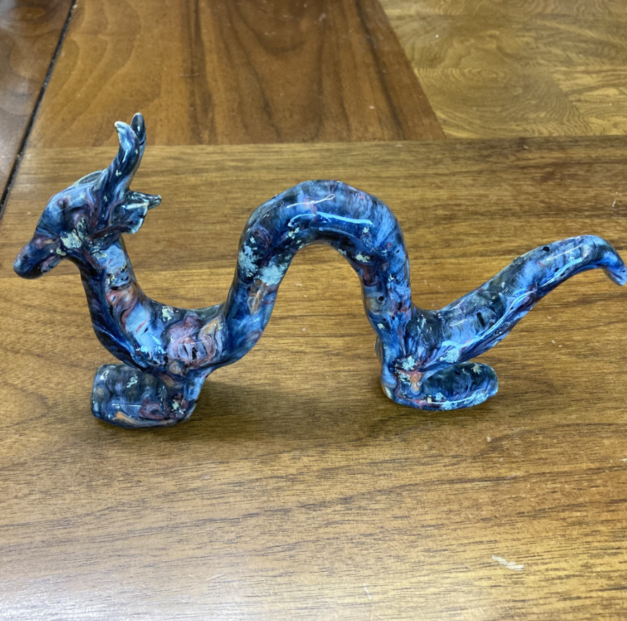
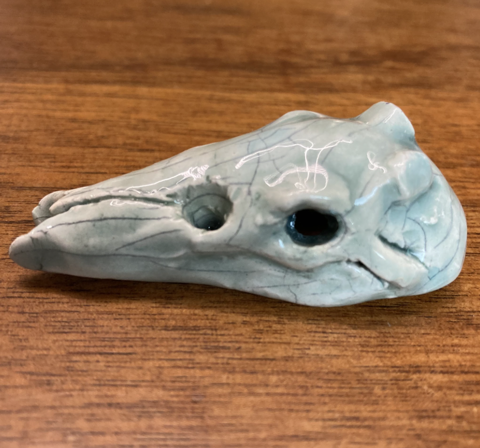
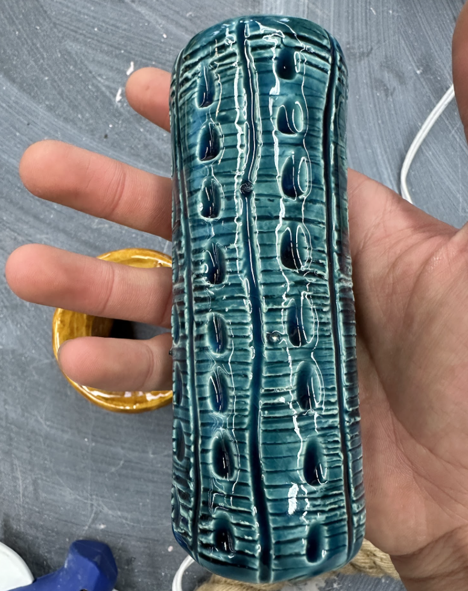
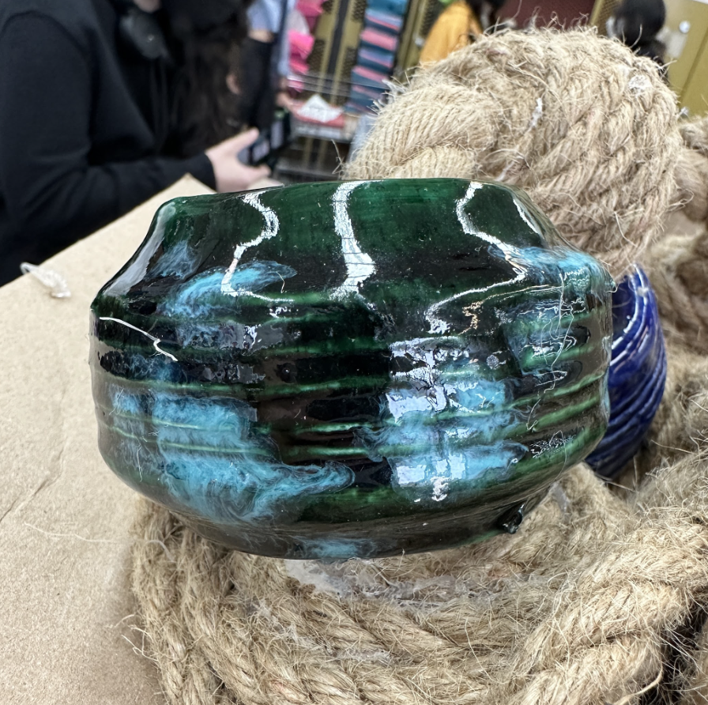
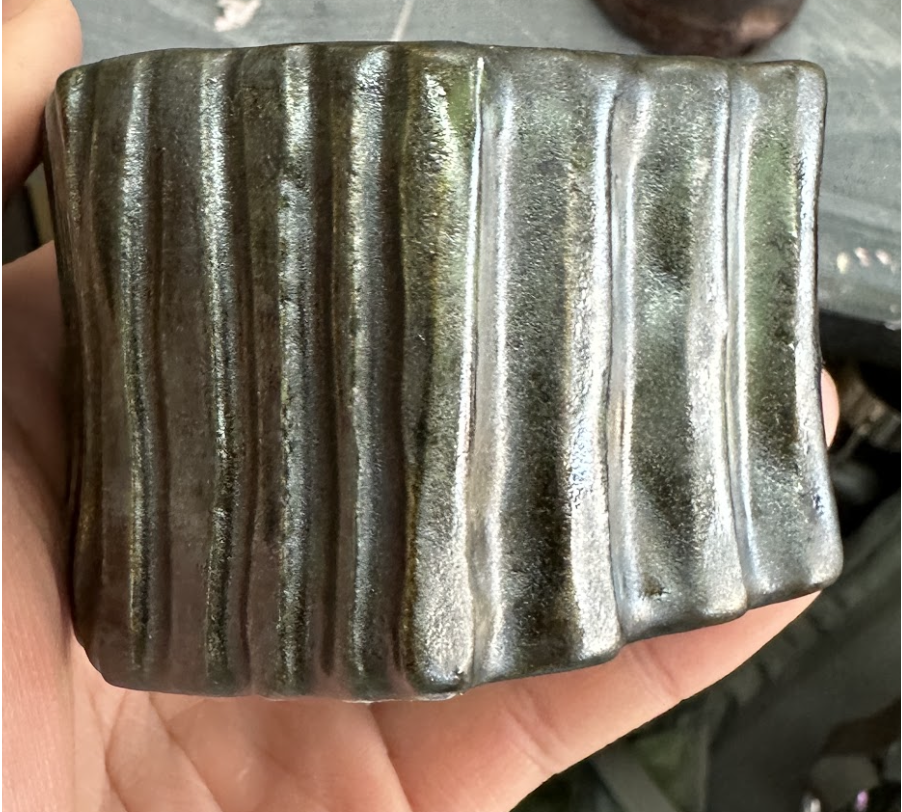
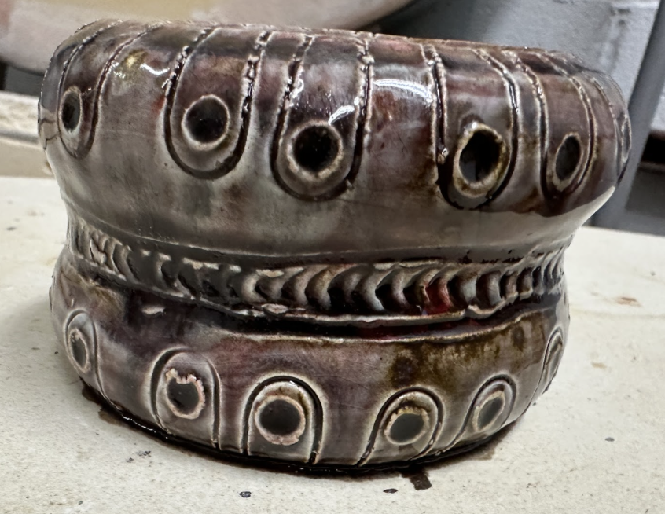
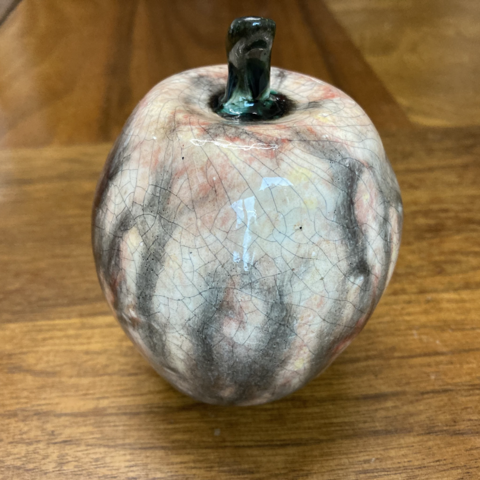
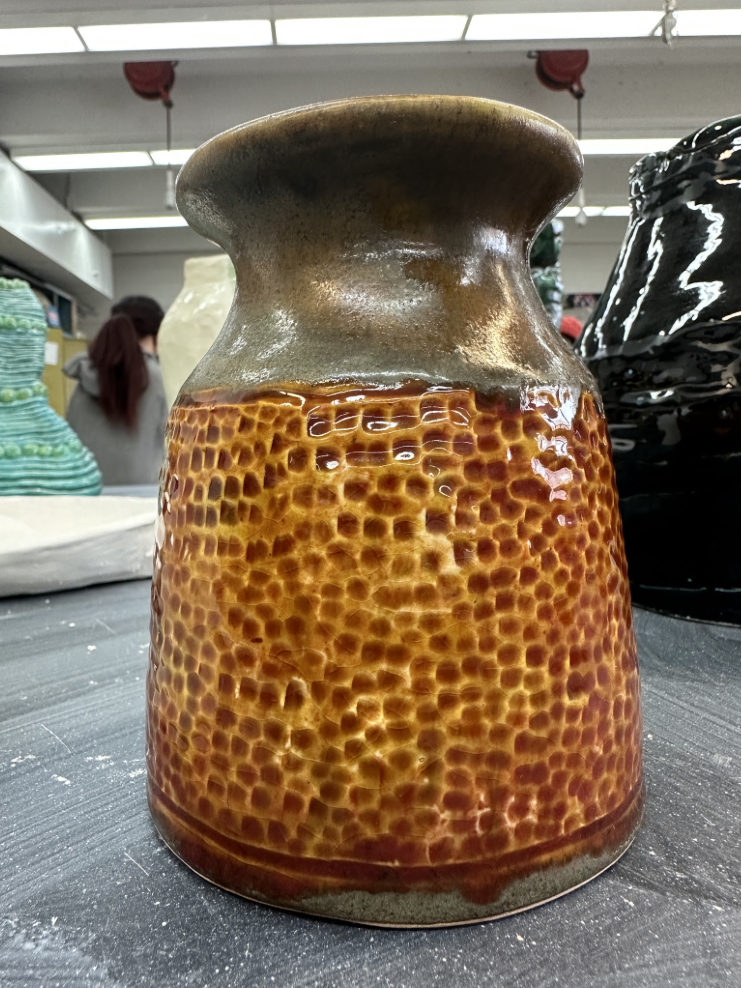
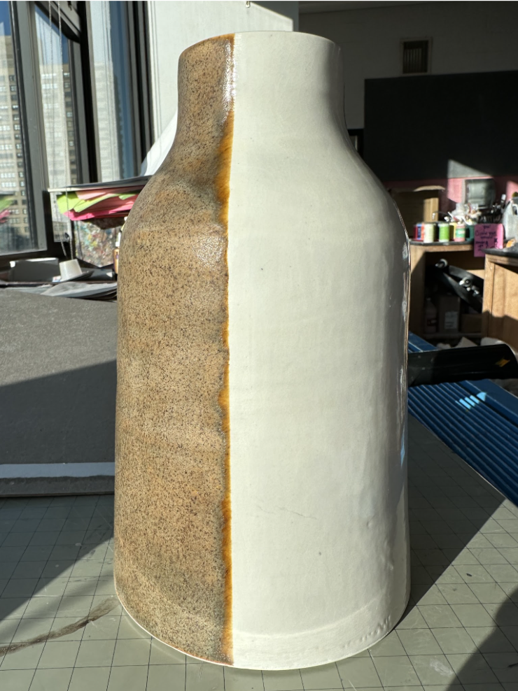

| Introduction To Glazes |
| Three Layer Glaze Combinations |
| Speciality Glaze Combinations |
| Extra Links |
Introduction To Glazes
Ceramic Glaze is an emulsion of silica, alumina, and other colorants. Glaze comes in liquid or powdered form. Liquid glazes are optimal for brushing onto the bisque ware. Powdered glazes are best suited for dipping or spraying. When kiln-fired, glazes will vitrify to create a thin layer of glass. Glazes have many uses including:
- To make the pottery food-safe. The glaze must not leech any toxic materials into the food or water, and the glass must be stable and not crackled.
- To Keep the ceramics safe from the elements and everyday wear and tear.
- Decoration of the pottery through the glaze's color, texture, opacity, and crackling.
Extra notes about glazes:
- Glazes will change color and texture after firing. To predict the final look of the glaze, you should view the manufacturer's description or create a test tile.
- Glazes can fire at different cones (temperatures). The color, texture, and properties (food safe or not) can change depending on which cone the glaze was fired to. The manufacturer should provide a list of cones the glaze is meant to fire at to achieve specific effects.
- Glazes come in many different styles. They can be opaque or clear, glossy or matte, spotty or spotless, crackled or flawless, rough or smooth.
- Glazes from different brands and properties can be mixed to create interesting new combinations.
- One should apply at least three layers of glaze to a piece of ceramic. Extra layers can be applied if desired.
- Glazes are usually supposed to be applied to bisque ware. However, some glazes (like underglaze) can used on greenware clay.
- One must foot the bottom of their piece (wipe the glaze off the part of the piece the kiln contacts) so that when the glaze melts it won't fuse the piece to the kiln shelf.
Three Layer Glaze Combinations
| Glaze Company | Glaze Name | Glaze Number | Glaze Qualities | Photograph |
|---|---|---|---|---|
| 1.Mayco 2.Mayco 3.Duncan |
1.Night Sky 2.Poppyfields 3.Parchment Crackle |
1.EL-209 2.S-2727 3.CR821 |
Opaque, Spotty, Glossy, Crackled |  |
| 1.Duncan 2.Duncan 3.Mayco |
1.Celadon 2.Celadon 3.China Sea |
1.IN1018 2.IN1018 3.CC-108 |
Clear, Crackled, Glossy, Solid Color |  |
| 1.Duncan 2.Amaco 3.Mayco |
1.Peacock 2.Nairobi Blue 3.China Sea |
1.IN1016 2.F-27 3.CC-108 |
Clear, Crackled, Glossy, Solid Color |  |
| 1.Spectrum 2.Duncan 3.Duncan |
1.Bullfrog 2.Emrald Falls 3.Bottle Green |
1.961 2.CR-903 3.IN1669 |
Clear, Glossy, Spotty, Varying Color |  |
| 1.Mayco 2.Mayco 3.Mayco |
1.Burnished Steel 2.Copper Adventurine 3.Patina |
1.961 2.CR-903 3.IN1669 |
Opaque, Matte, Metalic, Varying Color |  |
| 1.Mayco 2.Spectrum 3.Spectrum |
1.Volcanic Glow 2.Oxblood 3.Oxblood |
1.EL-211 2.928 3.928 |
Clear, Glossy, Spotty, Varying Color |  |
Speciality Glaze Combinations
| Glaze Company | Glaze Name | Glaze Number | Speciality Technique | Photograph |
|---|---|---|---|---|
| 1.Mayco 2.Spectrum 3.Mayco 4.Mayco 5.Mayco 6.Mayco |
1.Sandstorm 2.Oxblood 3.Crystal Clear Brushing 4.Black Ice 5.Black Ice 6.Malachite |
1.EL-102 2.928 3.S-2101 4.El-120 5.EL-120 6.EL-122 |
I applied black india ink to the piece in order to make the crackles in it stand out. Numbers 1-3 were applied to the body of the apple and numbers 4-6 were applied to the stem. |  |
| 1.Duncan 2.Duncan 3.Duncan 4.Duncan 5.Duncan 6.Duncan 7.Spectrum 8.Spectrum |
1.Iron Ore 2.Saddle Clove 3.Mediterranean Olive 4.Mediterranean Olive 5.Iron Ore 6.Saddle Clove 7.Oxblood 8.Oxblood |
1.CY110 2.CY112 3.CY104 4.CY104 5.CY110 6.CY112 7.928 8.928 |
I applied glazes 1-4 to the outter edges of the vessel and glazes 5-8 to the middle of the vessel. |  |
| 1.Duncan 2.Duncan 3.Duncan 4.Duncan 5.Mayco 6.Mayco 7.Mayco |
1.Iron Ore 2.Saddle Clove 3.Mediterranean Olive 4.Mediterranean Olive 5.White Crackle 6.White Crackle 7.White Crackle |
1.CY110 2.CY112 3.CY104 4.CY104 5.CC-102 6.CC-102 7.CC-102 |
I applied glazes 1-4 to 1/3 of the vessel and glazes 5-7 to remaining 2/3 of the vessel. |  |